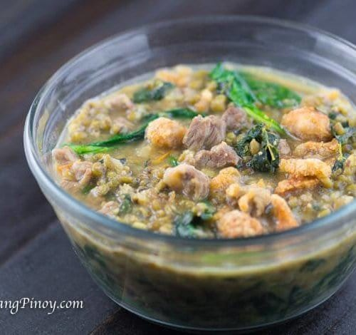

Pork Monggo

Pork Monggo Recipe Description
This is not my recipe. Check the original source here.
Source 2 for description.
Some dishes in a certain cuisine are known to best describe the feeling of home-cooked meals from that particular country.
For the Philippines, it can range from sinigang to fried bangus to longganisa.
But Ginisang Munggo is perhaps one of the best standout dishes that can definitely bring to you the comfort of a Filipino home.
Hearty, healthy, and made of affordable ingredients, this dish isn’t so often cooked and served by moms for nothing.
It has a subtle, savory taste, and a satisfyingly tender texture.
The mix of softened munggo or Mung beans with spinach, tomatoes, onions, and pork definitely make for a tasty and filling lunch meal.
And because it mainly banks on so many vegetables to fill the pan, it also has a ton of nutrients like folate and phosphorus.
Ingredients
- 1 cup mung beans
- 6 ounces pork sliced into thin small pieces
- 1 Knorr pork cube
- 1 bunch spinach washed
- 1 cup malunggay leaves
- 2 medium tomato cubed
- 1 medium onion cubed
- 1/2 cup chicharon crumbled
- 4 cloves garlic chopped into small pieces
- 1/4 teaspoon ground black pepper
- 1 to 2 tablespoons fish sauce patis
- 6 cups water
- 3 tablespoons cooking oil
Instructions
- Heat oil in a cooking pot.
- Saute garlic, onion, and tomato.
- Add the pork. Cook until the color of the pork turns light brown.
- Pour water into the pot. Let boil
- Add the pork cube. Stir.
- Add the mung beans. Cover and adjust the heat between low to medium. Continue to cook until the mung beans becomes tender. Add more water, if necessary.
- Add the mung beans. Cover and adjust the heat between low to medium. Continue to cook until the mung beans becomes tender. Add more water, if necessary.
- Add the mung beans. Cover and adjust the heat between low to medium. Continue to cook until the mung beans becomes tender. Add more water, if necessary.
- Put the malunggay leaves and spinach in the cooking pot. Stir and cook for 2 minutes.
- Add ground black pepper and fish sauce. Cook for 2 to 3 minutes.
- Transfer to a serving bowl. Top with chicharon.
- Serve. Share and enjoy!